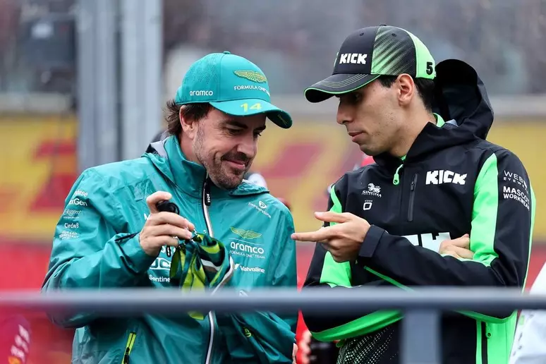
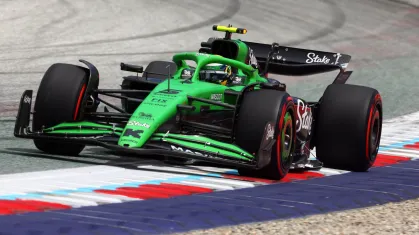
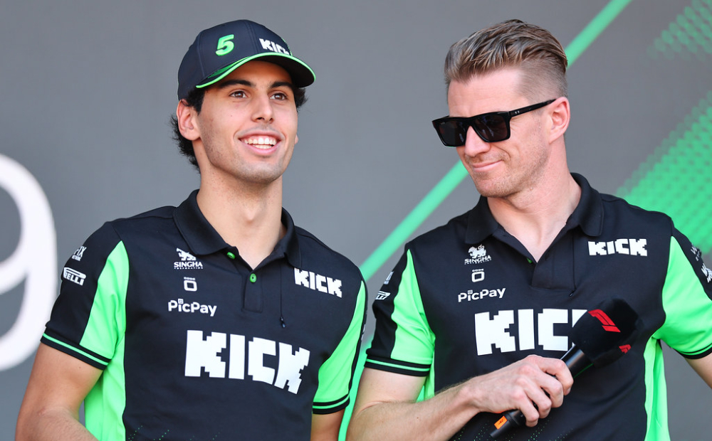
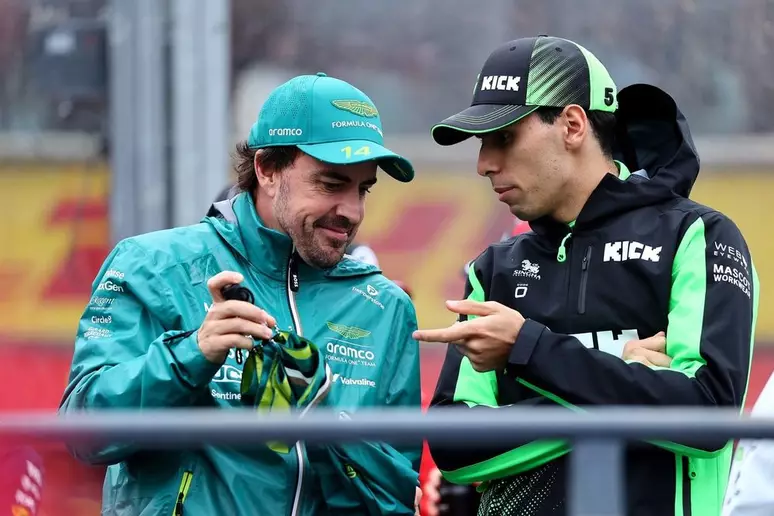
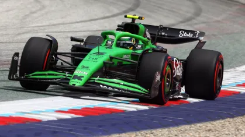
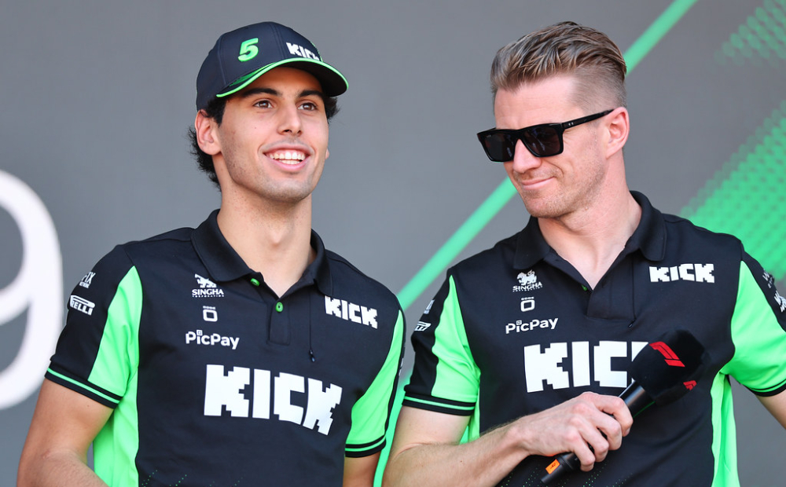

🏁 Gabriel Bortoleto na Fórmula 1
📅 Início na F1 (2025)
- Em 6 de novembro de 2024, a Sauber (que virará Audi em 2026) confirmou Gabriel Bortoleto como piloto titular para 2025, ao lado de Nico Hülkenberg.
- Sua estreia oficial ocorreu no GP da Austrália de 2025, onde avançou ao Q2 e largou em 15º, mas acabou abandonando após acidente sob chuva.
🔁 Ajustes e aprendizado
- Dividiu comparações com George Russell no início da carreira na Williams—reconhecendo que “não é fácil” se adaptar a um carro no fim do pelotão, e que essa fase exige paciência.
- A temporada começou com desafios de confiabilidade e performance do Sauber C45, inclusive um incidente nos testes em Bahrain.
🔵 Evolução em corridas
- No GP da Espanha (maio/2025), teve sua melhor classificação (Q3) até então, terminou em 12º, em uma corrida marcada por temperaturas extremas e melhorias no carro.
- Em GP da China, apesar de um spin na vasta área de escape, ele permaneceu na disputa e alcançou uma trajetória de crescimento .
🏆 Primeiros pontos — GP da Áustria (GP11)
- Em 30 de junho de 2025, na 11ª corrida da temporada, Bortoleto conquistou seus primeiros pontos ao terminar em 8º lugar na Áustria, alcançando o feito de ser o primeiro brasileiro na F1 desde Felipe Massa, em 2017, além de conquistar o prêmio de Driver of the Day.
- Fernando Alonso e o chefe Jonathan Wheatley elogiaram sua performance e aumento de confiança
⚙️ Carro e equipe
- Pilota o Sauber C45, última versão do modelo antes da transição para Audi; a equipe trouxe atualizações técnicas desde o GP da Espanha que aprimoraram seu desempenho.
- A equipe vem adotando uma abordagem de desenvolvimento incremental, e Bortoleto tem sido peça-chave no feedback técnico e evolução do projeto.
📅 Panorama até agora (Meados de 2025)
- Debut: GP da Austrália (DNF)
- Melhor resultado antes da Áustria: 12º no GP da Espanha
- Primeiros pontos: 8º no GP da Áustria
- Reconhecimento: Premio Driver of the Day, elogios de Alonso e Wheatley
- Desafios: adaptação ao carro, condições adversas, performance de equipe
Primeiros pontos de Bortoleto na F1
P8 no GP da Áustria
A espera de Gabriel Bortoleto por seus primeiros pontos na F1 terminou neste domingo (29/06/2025) no GP da Áustria. Após 11 corridas, o brasileiro terminou de forma inédita uma corrida entre os dez primeiros colocados - com seu oitavo lugar, o calouro da Sauber faturou quatro pontos no Mundial. O marco fez dele o piloto mais jovem do país a pontuar na história da categoria aos 20 anos, oito meses e 15 dias.